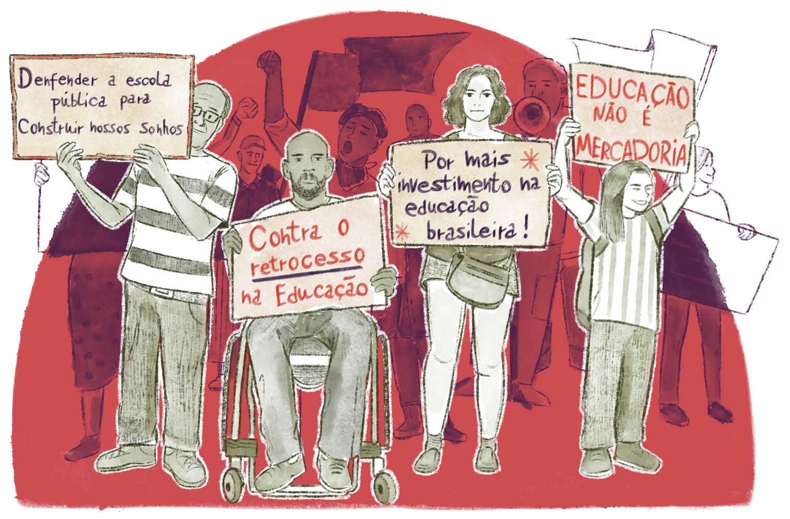
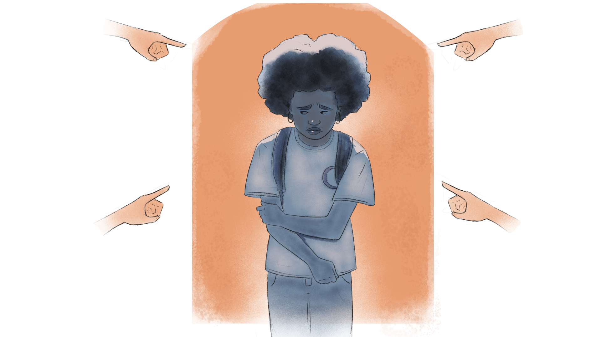

Pedagogias de resistência dos movimentos sociais: o que nos ensinam?
A garantia de acesso à educação de nível Técnico Médio e Superior em Instituições Federais para pessoas autodeclaradas pretas, pardas, indígenas, quilombolas e com deficiência coloca a educação para o trabalho como pauta dos diversos movimentos sociais no Brasil por meio da Lei 12.711/2012, atualizada pela Lei 13.409/2016, também espelhadas em diversas redes estaduais e municipais.
É fato que os processos de exclusão vividos pelos sujeitos da diversidade afetam diversas dimensões de suas vidas, inclusive o trabalho. Como dimensão que responde pela constituição da identidade nos modos de produzir sua existência, por meio da sua ação sobre a natureza física e social, ou seja, o trabalho no sentido ontológico, os lugares que a pessoa ocupa no mundo produtivo são fundantes para produção de suas subjetividades.
Nesse sentido, a conquista desse direito é uma reivindicação explícita dos movimentos sociais para produção de uma sociedade que supere os estigmas e as violências do racismo, do sexismo, do machismo, do capacitismo, da homofobia e da transfobia. Isso porque o direito à educação é tensionado para além dos discursos e das políticas que reduziram o processo educacional à mercadoria e a um meio de formação para o mercado de trabalho. Ele surge como um ponto de tensão pelos movimentos sociais na reivindicação de uma educação democrática, inclusiva e emancipadora.

Título: Os avanços dos movimentos sociais na conquista dos direitos educacionais
Fonte: Prosa (2025j).
Isso fica muito evidente quando observamos a ampliação da Rede Federal e das Redes Estaduais de Educação Profissional Técnica e a capilarização destas, bem como a implantação da formação integrada com o fruto da luta de trabalhadores.
A conquista desse direito acontece nas bases dos movimentos sociais pelo fato de conseguirem viabilizar diversos grupos em defesa ao direito à escola integrada à luta por suas existências, desde as necessidades mais básicas de sobrevivência, do trabalho, às lutas pela liberdade dos modos de ser e existir.
É no conjunto dessas lutas que muitos pesquisadores do campo educacional, como Daniel Chacon (2021) e Aldenora Macedo e Jaqueline Barbosa (2019), convergem para ideia de que os movimentos sociais produzem, que aqui definimos como aquelas que geram processos de mobilização, de ativação de sujeitos para reivindicação e construção de uma educação humanizadora e emancipadora frente aos contextos de objetificação e esquecimento da dignidade da pessoa humana.
Hoje, presentes nos espaços educativos, os sujeitos da diversidade continuam nessa luta muitas vezes articulados com os movimentos sociais e levando tensões para dentro da escola, propondo a ela repensar sobre suas práticas.
A ideia de que a escola deve promover uma educação democrática, justa e sem privilégios, é comum e altamente defensável. Mas como nos colocamos quando situações vividas por sujeitos da diversidade clamam por fazer valer essa justiça no cotidiano escolar?
Imaginemos a seguinte situação: por medidas de segurança e organização, a escola definiu que todos devem frequentar as aulas uniformizados. Porém, uma estudante que frequenta uma religião de matriz africana precisa usar roupas e alguns adereços específicos em um dia determinado da semana ou período do ano. A direção da escola autoriza a entrada da estudante, mas, de pronto, outros estudantes passam a questionar o fato dessa colega poder usar um traje diferente dos demais, alegando o fato de que isso promove um privilégio. Como a escola pode ser democrática se atende a interesses específicos?
A situação descrita emerge do falso dilema sobre o prevalecimento do direito das maiorias. Entretanto, precisamos discutir de qual maioria falamos: de uma maioria que sempre conseguiu e pôde se manifestar ou de uma maioria que foi diminuída como minoria por nunca ter direito à voz?
A relação entre o direito das maiorias e os direitos das minorias pode ser problematizada por meio da imposição de determinadas normas, como no caso de uma estudante negra de um colégio militar que foi impedida de frequentar a escola devido a seu cabelo crespo.

Título: A imposição de normas no ambiente escolar
Fonte: Prosa (2025k).
Ao que parece ser um possível privilégio, a reivindicação do direito de exercer sua diferença tensiona a gestão escolar a entender que a democracia pela igualdade pode anular o direito de ser diferente. Estar de uniforme atinge valores, crenças, ritos, práticas culturais de um grupo, talvez mais predominante dentro da escola? Ceder à pressão de uma maioria ali constituída pode excluir, expulsar outros sujeitos que sintam não ter suas formas de viver respeitadas?
Nessa direção, a reivindicação dos direitos feita pelos grupos sempre excluídos ecoa de fora para dentro da escola. Segundo Arroyo (2003), os movimentos sociais nos ensinam a pensar nos sujeitos sociais como protagonistas em formação. O autor afirma que
São eles, os novos-velhos atores sociais em cena. Estavam em cena mas se mostram como atores em público, com maior ou novo destaque. Seu perfil é diverso, trabalhadores, camponeses, mulheres, negros, povos indígenas, jovens, sem-teto, sem creche. Sujeitos coletivos históricos se mexendo, incomodando, resistindo, em movimento
 (1).png)
Título: Movimento sociais em cena
Fonte: Campanato (2006); Loures (2022); Moraes (2015); Rudy (2014).
Elaboração: Prosa (2025l).
Vamos pensar: se a aluna da primeira situação apresentada reivindica seu direito, onde ela aprendeu, suspeitou, viu como possível a manifestação de sua religiosidade como direito dentro da escola? Será que foi na própria escola que ainda se viu tensionada pelo debate? Certamente, essa é uma primeira lição que os movimentos sociais ensinam aos educadores: os fazem operar como sujeitos de direitos, pautando suas demandas, criando debates e discussões que desestabilizam as políticas educacionais, curriculares e as práticas educativas. Fazem deles protagonistas.
Nesse sentido, cabe refletirmos como a escola opera com os estudantes na sua condição como sujeitos da ação educativa. Qual papel que as gestões têm dado ao protagonismo juvenil nas decisões administrativas e pedagógicas? Como é fortalecido o sentido de pertença à própria comunidade escolar e à participação na luta por direitos de sua classe e de grupos sociais a que a comunidade estudantil pertence?
As pedagogias de resistência também nos ensinam que a concretude da vida dos estudantes na escola é atravessada pelas condições materiais, pela cor da pele, pelo gênero manifesto, pelas condições físicas possíveis. Cada estudante é uma pessoa em sua inteireza. Assim, obriga a gestão a pensar se os currículos, as normas e as regras da escola captam os direitos de existência da multiplicidade humana. Como a diferença de uma pessoa ou de um grupo pode ser acolhida? Quais projetos, programas, dimensões de atuação do projeto pedagógico da unidade escolar homogeneizam as pessoas e quando promovem o direito à diferença?
Ao pautar suas reivindicações, o acesso às outras leituras da realidade, culturas e histórias intencionalmente esquecidas ou silenciadas, os movimentos sociais foram construindo propostas para construção e transformação de políticas curriculares. Assim, surge o desafio de debater a educação e o trabalho a partir de uma reflexão crítica. Por que as áreas de conhecimento, ao analisarem a cidade, o campo, as periferias e os centros urbanos, as técnicas e os modos de produção, a tecnologia, a história, a literatura, as artes e as filosofias, frequentemente ignoram saberes? Esses saberes, legitimamente construídos e acumulados ao longo da história, refletem a pluralidade e a diversidade dos sujeitos que trabalham e produzem a natureza física e social.
Como outros modos de pensar o trabalho humano foram tidas como marginais para o saber escolar? Arroyo (2003, p. 41) nos dá a resposta:
Os coletivos questionam a visão da cultura como um todo coerente, aceito, homogêneo que a ação educativa tem de inculcar, transmitir, e os educandos, todos aprender e internalizar. Questionam essa homogeneidade cultural tão incrustada no currículo e na escola e de formas diversas quebram a aparente homogeneidade para afirmar a diversidade em que é tecida a vida social, em que se constróem os coletivos sociais e os indivíduos. Em que se formam.
Os movimentos sociais nos educam. Deixaram até aqui grandes lições. Hoje, o desafio da gestão é fazer ressoar no cotidiano, nos livros, nos discursos dentro da escola esses questionamentos para possibilitar uma educação plural e democrática e para formar pessoas com subjetividades potentes, com capacidade de viver sob o signo da diferença como um direito inerente à vida e à existência de todos.
Para refletir: diversidade na comunidade
Quais elementos da diversidade caracterizam sua comunidade? Sua escola ou campus tem esse diagnóstico? Quais investimentos foram feitos tendo em vista a demanda dos sujeitos da diversidade?
Chegamos ao último momento de reflexão deste capítulo! Lembre-se de registrar suas impressões no Memorial e/ou de seguir as orientações de seu tutor sobre essa atividade.